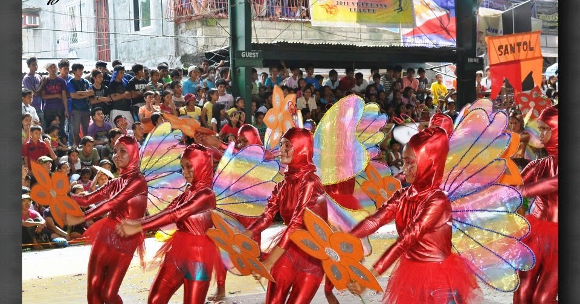

Bila Bila Festival

This festival is celebrated during the town fiesta, every December 8 in Boac town. The event features the life cycle of butterflies since butterfly farming is the towns unique industry. The butterfly is a mainly day-flying insect which is essential to environment but for Boacenos, butterfly is not just a simple creature of God but a symbol of hope.